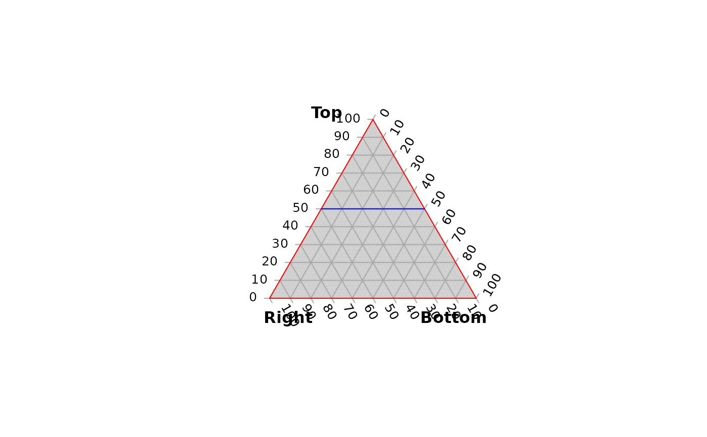

Create and style a blank ternary plot.
TernaryPlot( atip = NULL, btip = NULL, ctip = NULL, alab = NULL, blab = NULL, clab = NULL, lab.offset = 0.16, lab.col = NULL, point = "up", clockwise = TRUE, xlim = NULL, ylim = NULL, lab.cex = 1, lab.font = 0, tip.cex = lab.cex, tip.font = 2, tip.col = "black", isometric = TRUE, atip.rotate = NULL, btip.rotate = NULL, ctip.rotate = NULL, atip.pos = NULL, btip.pos = NULL, ctip.pos = NULL, padding = 0.08, col = NA, grid.lines = 10, grid.col = "darkgrey", grid.lty = "solid", grid.lwd = par("lwd"), grid.minor.lines = 4, grid.minor.col = "lightgrey", grid.minor.lty = "solid", grid.minor.lwd = par("lwd"), axis.lty = "solid", axis.labels = TRUE, axis.cex = 0.8, axis.font = par("font"), axis.rotate = TRUE, axis.pos = NULL, axis.tick = TRUE, axis.lwd = 1, ticks.lwd = axis.lwd, ticks.length = 0.025, axis.col = "black", ticks.col = grid.col, ... ) HorizontalGrid( grid.lines = 10, grid.col = "grey", grid.lty = "dotted", grid.lwd = par("lwd"), direction = getOption("ternDirection", 1L) )
| atip, btip, ctip | Character string specifying text to title corners,
proceeding clockwise from the corner specified in |
|---|---|
| alab, blab, clab | Character string specifying text with which to label
the corresponding sides of the triangle.
Left or right-pointing arrows are produced by
typing |
| lab.offset | Numeric specifying distance between midpoint of axis label
and the axis.
Increase |
| lab.col | Character vector specifying colours for axis labels. Use a vector of length three to specify a different colour for each label. |
| point | Character string specifying the orientation of the ternary plot:
should the triangle point |
| clockwise | Logical specifying the direction of axes. If |
| xlim, ylim | Numeric vectors of length 2 specifying the minimum and maximum
x and y limits of the plotted area, to which |
| lab.cex, tip.cex | Numeric specifying character expansion (font size) for axis labels. Use a vector of length three to specify a different value for each direction. |
| lab.font, tip.font | Numeric specifying font style (Roman, bold, italic, bold-italic) for axis titles. Use a vector of length three to set a different font for each direction. |
| isometric | Logical specifying whether to enforce an equilateral shape
for the ternary plot.
If only one of |
| atip.rotate, btip.rotate, ctip.rotate | Integer specifying number of degrees to rotate label of rightmost apex. |
| atip.pos, btip.pos, ctip.pos | Integer specifying positioning of labels,
iff the corresponding |
| padding | Numeric specifying size of internal margin of the plot; increase if axis labels are being clipped. |
| col | The colour for filling the plot; see |
| grid.lines | Integer specifying the number of grid lines to plot. |
| grid.col, grid.minor.col | Colours to draw the grid lines. Use a vector of length three to set different values for each direction. |
| grid.lty, grid.minor.lty | Character or integer vector; line type of the grid lines. Use a vector of length three to set different values for each direction. |
| grid.lwd, grid.minor.lwd | Non-negative numeric giving line width of the grid lines. Use a vector of length three to set different values for each direction. |
| grid.minor.lines | Integer specifying the number of minor (unlabelled) grid lines to plot between each major pair. |
| axis.lty | Line type for both the axis line and tick marks. Use a vector of length three to set a different value for each direction. |
| axis.labels | This can either be a logical value specifying whether (numerical) annotations are to be made at the tickmarks, or a character or expression vector of labels to be placed at the tick points. |
| axis.cex | Numeric specifying character expansion (font size) for axis labels. Use a vector of length three to set a different value for each direction. |
| axis.font | Font for text. Defaults to |
| axis.rotate | Logical specifying whether to rotate axis labels
to parallel grid lines, or numeric specifying custom rotation for each axis,
to be passed as |
| axis.pos | Vector of length one or three specifying position of axis
labels, to be passed as |
| axis.tick | Logical specifying whether to mark the axes with tick marks. |
| axis.lwd, ticks.lwd | Line width for the axis line and tick marks. Zero or negative values will suppress the line or ticks. Use a vector of length three to set different values for each axis. |
| ticks.length | Numeric specifying distance that ticks should extend beyond the plot margin. Also affects position of axis labels, which are plotted at the end of each tick. Use a vector of length three to set a different length for each direction. |
| axis.col, ticks.col, tip.col | Colours for the axis line,
tick marks and tip labels respectively.
Use a vector of length three to set a different value for each direction.
|
| ... | Additional parameters to |
| direction | (optional) Integer specifying the direction that the current ternary plot should point: 1, up; 2, right; 3, down; 4, left. |
The plot will be generated using the standard 'graphics' plot functions, on
which additional elements can be added using cartesian coordinates, perhaps
using functions such as arrows,
legend or text.
HorizontalGrid: Add grid.lines horizontal lines to the ternary plot
AddToTernary(): Add elements to a ternary plot
TernaryCoords(): Convert ternary coordinates to Cartesian (x and y)
coordinates
TernaryXRange(), TernaryYRange(): What are the x and y limits
of the plotted region?
Martin R. Smith (martin.smith@durham.ac.uk)
TernaryPlot(atip = "Top", btip = "Bottom", ctip = "Right", axis.col = "red", col = rgb(0.8, 0.8, 0.8)) HorizontalGrid(grid.lines = 2, grid.col = 'blue', grid.lty = 1)  # the second line corresponds to the base of the triangle, and is not drawn